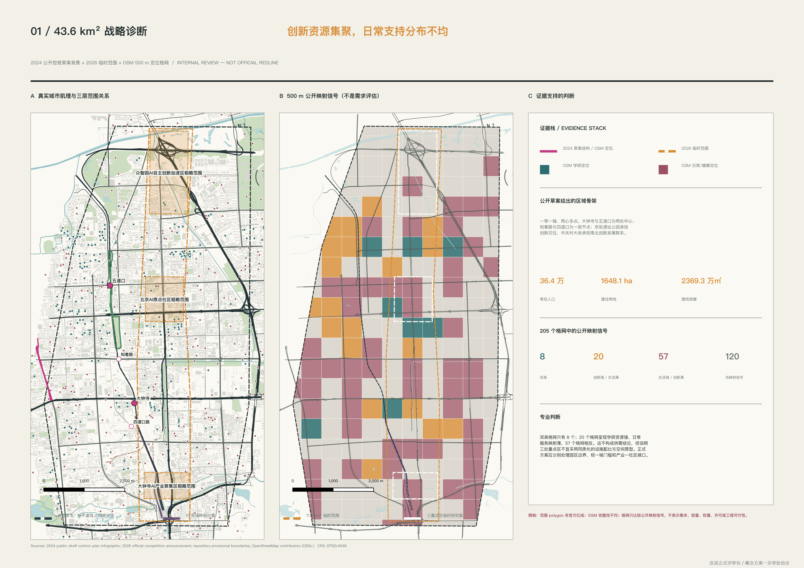
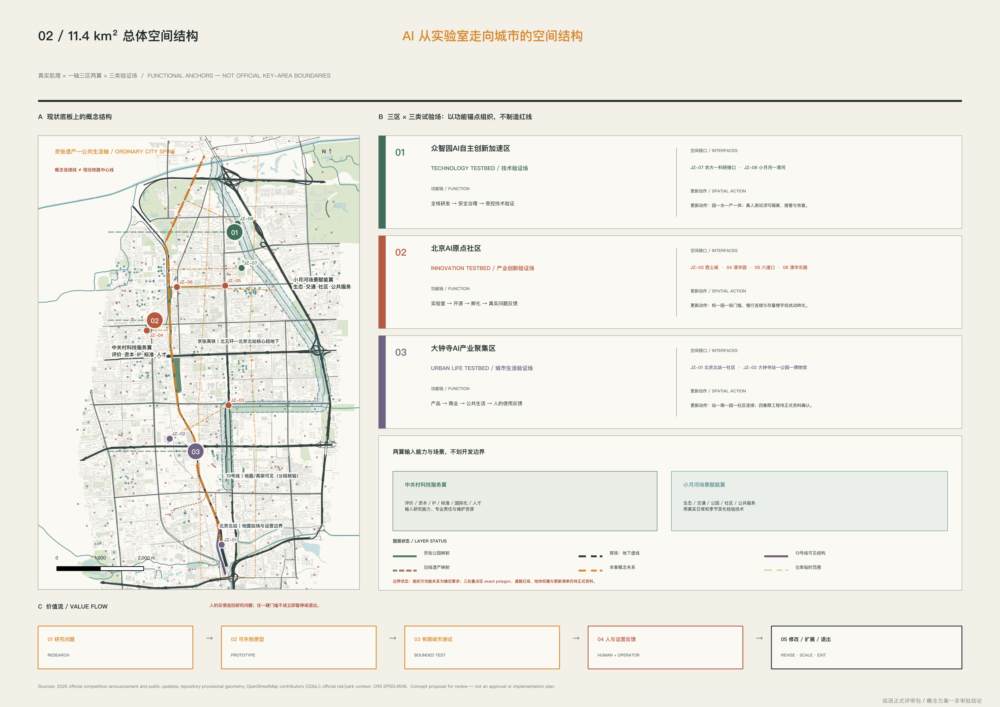
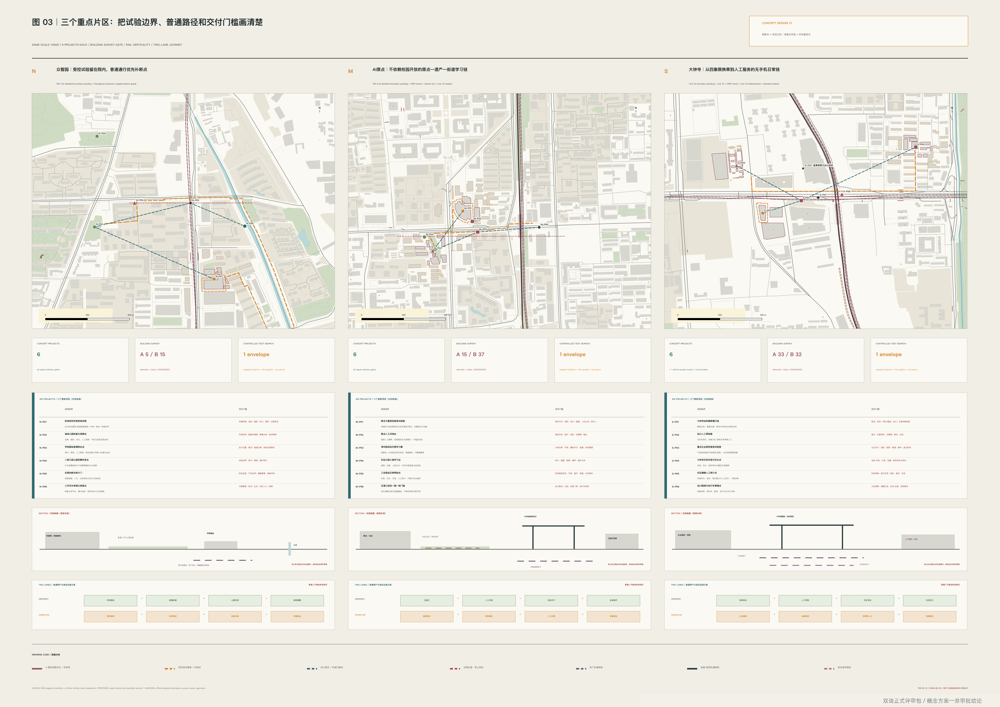
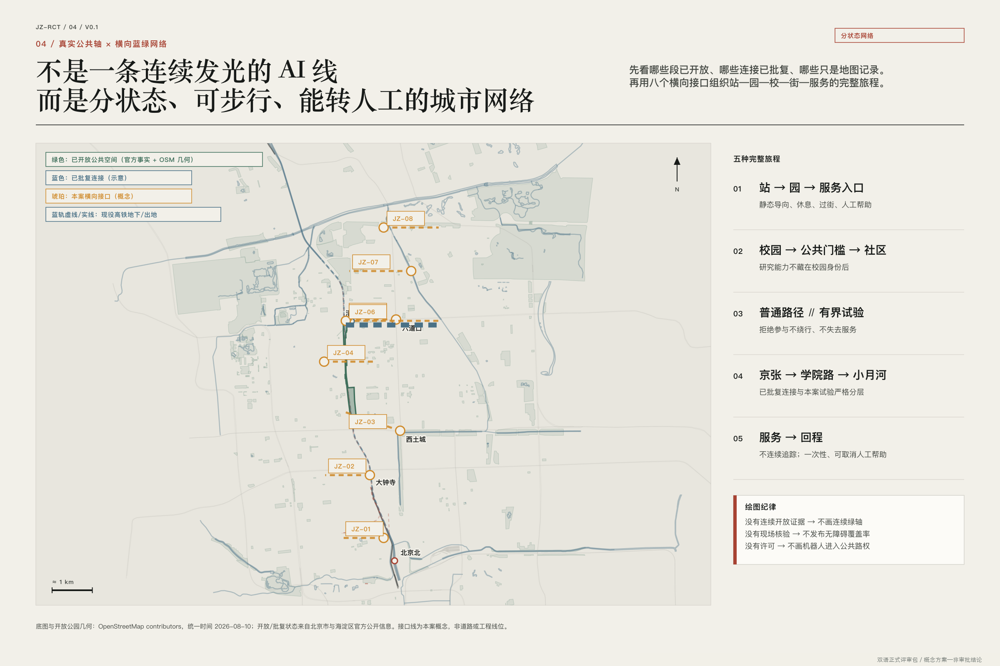
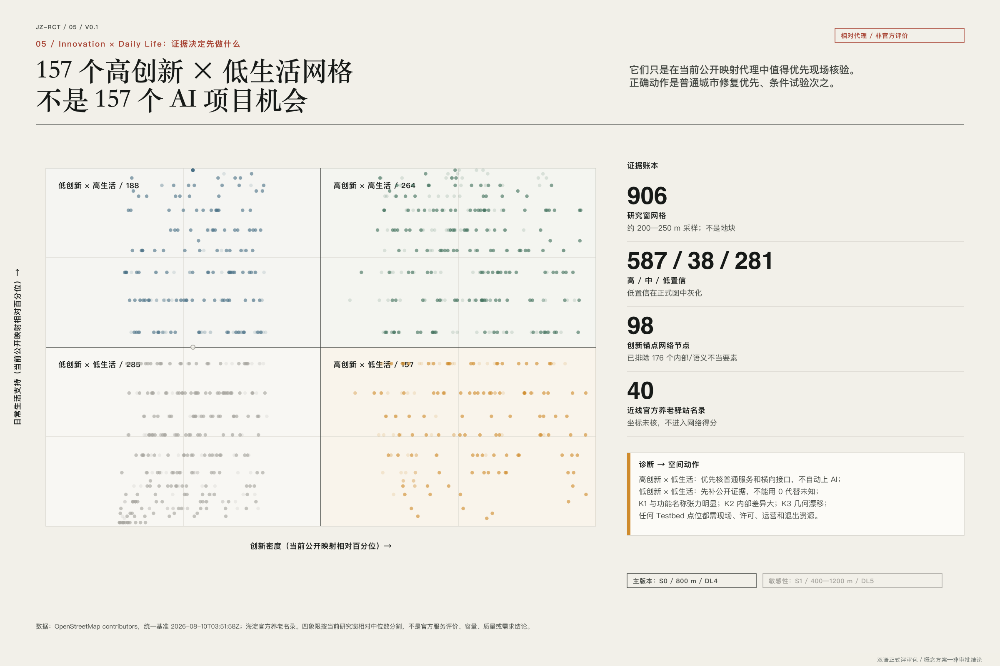

普通城市公共轴，AI 关闭仍可用
CENTENNIAL JING-ZHANG AI INNOVATION BELT · BILINGUAL PACKAGE V0.4
百年京张：AI 从实验室走向真实城市的第一公里
不是科技展带，而是一套让城市提出问题、允许失败、要求人工接管并保留退出权的空间制度。
CITY-IN-THE-LOOP · CONCEPT / NOT AN APPROVAL技术、产业创新、城市生活
观察、原型、部署、扩展
文化、生活体验与融合创新逐项落到一轴三区两翼。
六项概念线位、两项仅登记；地面、地下和高架分别核验。
每张场景卡绑定空间包、值守单元和证据输出。
纯合成通过/停止案例验证决策链，不冒充实测结果。
按证据、期限和撤销规则展示贡献，不做企业或模型排名。
候选阈值不是成绩；实测结果保持空值。
01
总览地图 / 证据分层
高铁中段在清华园隧道运行；旧地面线为遗产机会；13 号线多为可见高架/路堤；北段高铁重新出地。地面开放不等于地下可建设。

02
三层范围 / 一轴三区两翼

众智园 / 技术验证场
受控、低速、可接管、可恢复
AI 原点 / 产业创新验证场
问题先行、公众理解、失败可见
大钟寺 / 城市生活验证场
无手机可用、人工转接、非诊断
03
重点区域 / 三类验证场

04
用地分区、建筑与城市更新
用地分区是完整覆盖的概念图层；建筑只表达可逆原型，不给真实建筑贴拆改留标签。八个更新项目先做现场底图、连续性审计和普通服务修补。
更新项目
P01—P08 · V0.1—V1.0
无官方 geometry、权属和专业审查，不进入建设结论。
P01—P08 · V0.1—V1.0
无官方 geometry、权属和专业审查，不进入建设结论。
05
交通慢行、轨道竖向与蓝绿公共空间

06
AI 场景 / 三个旗舰
AI 学习廊
理解、质疑、反向定义问题、记录失败。
具身智能城市实验室
封闭低速、先人后机、故障接管、恢复原状。
AI 健康与老龄实验室
无手机服务旅程、非诊断、人工转接。
城市问题台
把城市问题、普通做法、不可接受后果和责任人先写清，再讨论 AI。
无屏解释步道
不扫码也能看懂能力、限制、数据、负责人和停止方式。
反向实验室
居民与运营者把真实约束送入实验室，并可否决技术化改写。
失败与修订档案
公开记录人工接管、恢复、修订与退役成本。
共享路权沙盒
封闭低速测试礼让、盲角、近失误、急停和恢复。
路缘交接湾
把配送交接留在不占盲道、消防和唯一通行线的固定湾位。
故障与人工接管演练
受控注入断网、定位漂移和低电量，证明谁接管以及多久恢复。
非识别式设施巡检
只生成设施缺陷候选，端侧处理，不做人脸、行为或人员绩效判断。
无手机服务查找
以纸质目录、静态地图和人工窗口为基线，AI 只解释经核服务信息。
休息到服务无障碍旅程
把坡度、过街、座椅、遮阴、厕所、施工和门禁纳入可解释路线。
照护者人工转接
复杂照护问题直接转具备职责的人员，不采集或推断诊断信息。
服务目录审校
由人工定期核地点、时间、资格和电话，过期即下线。
07
City Release
观察：问题、基线、许可、责任
原型：纸面、离线或封闭失败
部署：有界、知情、值守、可恢复
扩展：跨季节证据、维护与退出成本
07A
空间—场景—运营实证链
8 项接口登记
JZ-01—06 对应概念横向关系；北京北站咽喉与隧道门户 JZ-07—08 因缺乏合法穿越证据只登记、不推测画线。
9 个重点区工作包
每区三项：普通路径、受控试验或服务门槛、停止恢复；均非立项或真实拆改留结论。
12 项运营链接
SC01—SC12 逐一对应空间包、值守角色、Release gate 与可审计证据。
通过与停止各一例
TT-PASS-01 保持 V0.5；TT-STOP-01 因合成急停失败降回 V0.1。两例均非实测。
公共验证册
只展示普通服务修补、可复核失败、人工接管、公共回报与开放协议；到期复核，可撤销。
开发者共同体
从公开问题简报进入证据诊所、离线原型、封闭测试、公开复盘和采用/修订/停止。
08
核心指标 / 已知与未知

09
任务覆盖 · 自检状态
任务覆盖
自检状态
确定性 gate 结果以 self_check.json 与 manifest 哈希为准；本页不替代官方校验。
确定性 gate 结果以 self_check.json 与 manifest 哈希为准；本页不替代官方校验。
10
来源 · 假设
来源
征集公告、任务书、国家铁路局与北京市/海淀公开资料、仓库 site package、OSM（ODbL）、五个全球机制案例，以及北纬、未来科学城、怀柔科学城、北京经开区相关官方公开资料。完整登记见 sources.json。
假设
官方边界、控规、权属、现场、运营、铁路工程与利益相关者证据仍缺失；所有关键结论均有替换或停止动作。区域协同均为候选接口，不代表合作。见 assumptions.json。